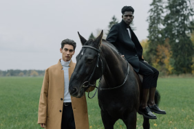
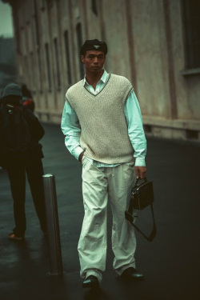
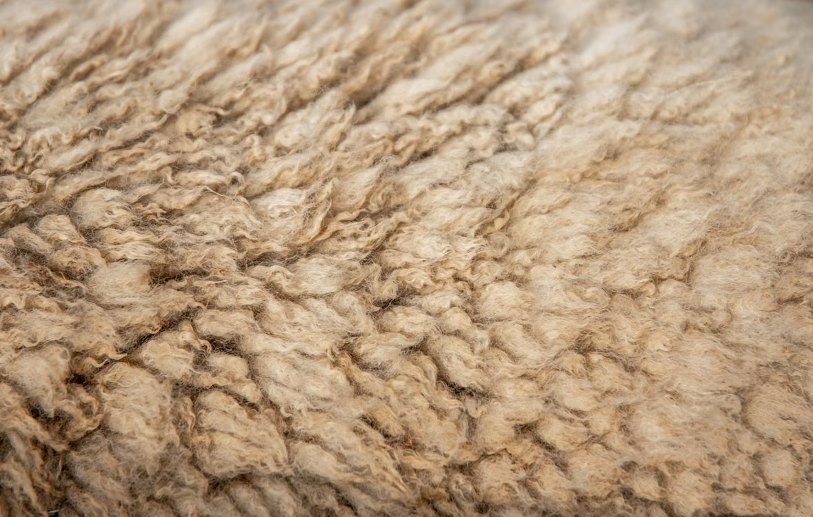
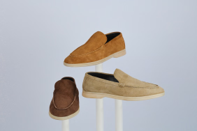

Bliv sikker på dine valg
Forstå pasform og proportioner, så du ved, hvad du skal kigge efter.
PERSONLIG STIL / FOR BEGYNDERE
Du behøver ikke kende alle moderegler. Lær de få principper, der gør det let at se velklædt ud — på arbejde, til en date og i hverdagen.
Kom i gang
MINDRE TVIVL. MERE DIG.
Personlig stil handler om at føle sig godt tilpas og vælge med omtanke. Start enkelt, og find det, der passer til dit liv.
Forstå pasform og proportioner, så du ved, hvad du skal kigge efter.
Sæt dine items sammen på nye måder, før du køber mere.
Få alsidige outfits, der fungerer i flere situationer.
DIN VEJ TIL EN MERE GENNEMFØRT STIL
Tag guiderne i rækkefølge, eller begynd med det, du har mest brug for.

Lær at se, om tøjet sidder godt — fra skuldre til bukselængde.
Læs guiden →
Få styr på de få items, du kan bruge igen og igen.
Læs guiden →
Sæt et enkelt, gennemført outfit sammen fra trin for trin.
Læs guiden →START MED GRUNDPRINCIPPERNE
Begynd med pasform, proportioner og farver. Resten bygger vi på sammen.
Kom i gang